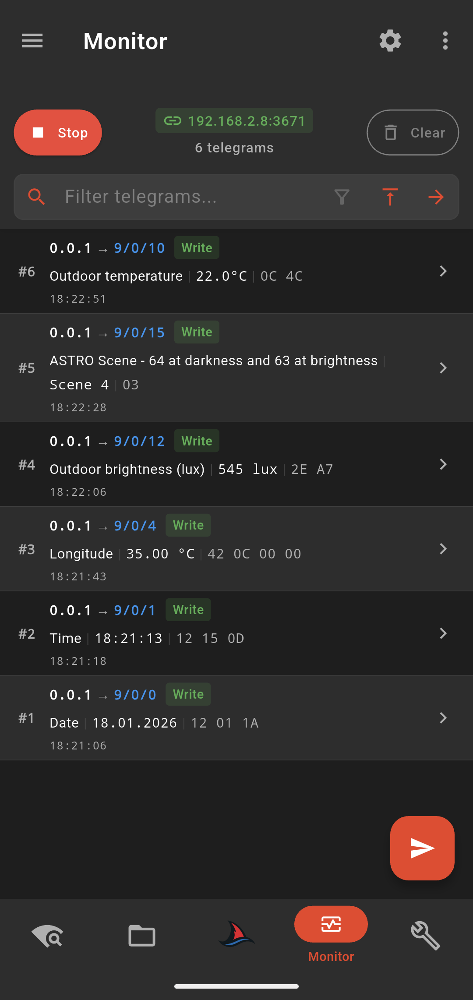
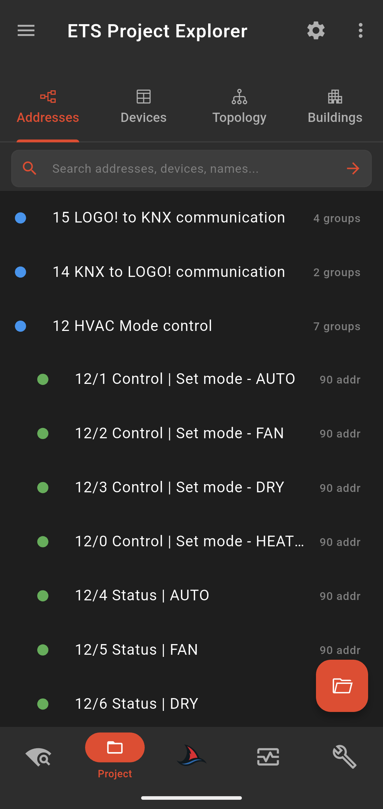

SharKNX
Mobile KNX monitoring & diagnostics
SharKNX is a professional mobile tool for KNX installers, system integrators, and technical maintenance teams. Perform fast diagnostics and live bus monitoring directly on site - without opening ETS or carrying a laptop.
Note: SharKNX is not intended to replace ETS. It does not provide all ETS functions, but serves as a fast, practical mobile companion for commissioning, troubleshooting, and support.
- Live monitoring of KNX group telegrams
- View ETS (.knxproj) project data on phone or tablet
- Discover and connect to KNX/IP gateways and routers
- Quick on-site troubleshooting during commissioning and support
- Shark Hunts: Create custom diagnostic pages with send actions (fixed values or sequences) and advanced monitor filters (by device, space, time, etc.). Share them with customers so checks can be performed remotely - identify issues before visiting the site.
Screenshots
SharKNX Android app



Designed for System Integrators, Installers, Engineers, Maintenance Teams
Connect to your KNX/IP Gateway and start monitoring, sending commands and more!
SharKNX is designed as a practical on-site tool for diagnostics and maintenance of KNX installations.